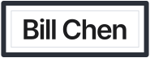
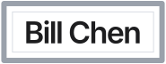
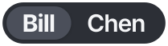
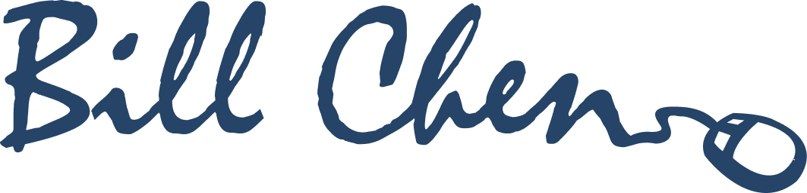

Logo options
Eighteen ways to sign the portfolio, each with a matching favicon. Every card shows the logo on light and dark, in a header, and the favicon at tab and home screen sizes. Pick a number, or try a favicon in this tab.
Type
Pure type. The name set in one font, carefully kerned.
1Inter Tight ExtraBold
The name set tight in Inter Tight ExtraBold, the same face as the home page headings.
2Space Grotesk lowercase
A friendly lowercase in Space Grotesk Bold, in the Data Broker teal.
3Syne Bold
Syne has wide, slightly quirky curves that feel designed without trying hard.
4Fraunces serif
A warm, soft serif in Fraunces SemiBold for an editorial feel.
5Manrope in Assurance blue
Manrope ExtraBold, geometric and calm, in the Assurance blue.
6Barlow Condensed caps
Tall condensed capitals with open tracking, like a gallery wall label.
Designed
Marks built around the name, each with a small idea from the portfolio.
7BC ring monogram
The C becomes an open blue ring that holds the B, set beside the name.
8Framed name
The name hung like a piece on the wall: frame, white mat and a fine bevel line.


9Picture light
The brushed nickel picture light from the home page, washing light over the name.
10Text caret
A blue text caret after the name, as if you are about to type the next line.
11Node flow
The dot of the i is a node, and a connector routes over the name to a second node, like a flow diagram.
12Segmented control
The name as a segmented control with Bill selected, a nod to the UI work.

13Stacked overlap
Bill over Chen in heavy type, the second line tucked up under the first with a clean knockout.
14Knockout badge
The name cut out of a solid badge so the page shows through, with a blue square for the dot of the i.
Signature update
Your old hand lettered signature, redrawn clean with the mouse swapped for something current.

15Signature with cursor
The hand lettered signature in navy, the tail now runs to a modern pointer instead of the mouse.
16Signature with tap
Brushy Kaushan Script lettering whose tail ends in a touch tap ripple, in Assurance blue.
17Signature with pen node
A looser signature in Mr Dafoe, the tail drawn as a bezier path ending on a pen tool anchor.
18Signature with sparkle
Marker style brush lettering with the tail ending in a small AI sparkle, in Assurance blue.